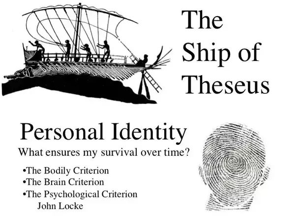

The branch of philosophy that asks what reality truly is — what
exists, what it means to be, and how existence, time, space,
causation, identity, possibility, mind, and matter shape the world we
experience.
What Is Metaphysics in Philosophy?
Metaphysics is the branch of philosophy that investigates the
fundamental nature of reality — what exists, what it means for something
to exist, and how the things that exist relate to one another. It asks
questions that lie at the most general level of philosophical inquiry:
What is being? What kinds of things are real? What makes an object the
same object through change? What is the nature of time, space,
causation, possibility, necessity, mind, and matter? Unlike a particular
empirical science, metaphysics is concerned with the most general
structures and principles that any account of reality may presuppose. It
therefore addresses questions about existence and reality that cannot
always be settled simply by describing individual observations, while
remaining closely connected to what we learn from experience and the
sciences.
Metaphysics asks what ultimately makes up reality and what it means
for anything to exist.
One of the central areas of metaphysics is ontology,
the philosophical investigation of what exists and what kinds of
entities there are. Ontological questions can concern physical objects,
minds, properties, relations, numbers, events, abstract objects,
persons, and social entities. Metaphysicians may ask whether universals
such as redness or justice exist independently of particular things,
whether numbers are real objects or human constructions, or whether
entities such as institutions and nations have a distinctive kind of
social existence. Metaphysics also investigates
identity and persistence: how something can remain the
same thing while undergoing change. These questions show why metaphysics
is not simply a search for unusual or supernatural objects, but a
systematic examination of the categories and structures through which
reality is understood.
The name "metaphysics" has an unusual history. It is derived from the
Greek phrase ta meta ta physika, commonly translated as "the
things after the Physics." The title originally referred to the
arrangement of Aristotle's works rather than to a claim that metaphysics
simply means "beyond physics." Aristotle himself used expressions such
as first philosophy, first science, and wisdom for
inquiries concerning being as such, first causes, substance, and the
most fundamental principles of reality. His work became enormously
influential in the subsequent development of metaphysical terminology,
although the questions that fall under metaphysics have changed
substantially across different philosophical traditions and historical
periods.
Metaphysics also examines concepts such as
causation, possibility, necessity, and dependence. A
philosophical account of causation asks what it means for one event or
state of affairs to bring about another and whether causal relationships
are fundamental features of reality or depend upon deeper structures.
Questions about modality ask what could have been otherwise, what must
be the case, and what is merely contingent. Philosophers therefore
distinguish between what is actually true and what is necessarily or
possibly true. These questions lead into the study of possible worlds,
dispositions, laws of nature, grounding, and metaphysical explanation,
showing how metaphysics investigates not only what exists but also how
different aspects of reality depend upon and constrain one another.
Time, space, change, and persistence provide another major group of
metaphysical problems. Philosophers have asked whether the past,
present, and future are equally real, whether time genuinely passes, and
what it means for an object to persist through temporal change. Similar
questions arise concerning the nature of space, motion, and the
relationship between objects and the structures in which they exist.
Metaphysical debates about time and space have interacted closely with
developments in physics, particularly since modern theories of
relativity transformed scientific conceptions of temporal and spatial
structure. Metaphysics does not replace physics in determining empirical
facts, but it can examine the philosophical implications and conceptual
commitments of physical theories.
Contemporary metaphysics is much broader than the ancient study of first
causes. Philosophers investigate ontology, properties, universals,
identity, persistence, modality, causation, time, space, free will,
personal identity, consciousness, the relation between mind and body,
social reality, and the existence or nature of God. Some metaphysical
questions overlap closely with science, logic, epistemology, and
philosophy of language, but metaphysics remains concerned with what
reality is like and what must be true about reality at the most
fundamental level. Questions about
free will, for example, connect metaphysics with agency
and moral responsibility, while questions about consciousness connect
metaphysics with philosophy of mind and the nature of subjective
experience.
Metaphysical arguments generally rely on conceptual analysis,
distinctions, logical reasoning, thought experiments, explanatory
principles, and reflection on experience. This does not mean that
metaphysics ignores science. Modern metaphysics often takes scientific
theories seriously while asking what those theories imply about objects,
laws, time, causation, space, possibility, or the structure of the
world. Philosophers may also ask whether a scientific theory provides a
complete account of reality or whether further metaphysical questions
remain about what its theoretical entities are, how they are related,
and why the theory should be interpreted in one ontological way rather
than another. The relationship between metaphysics and science is
therefore not simply a conflict between speculation and experiment, but
an ongoing philosophical investigation into what our best descriptions
of reality mean.
Metaphysics ultimately asks questions that arise whenever we try to
understand reality at its most fundamental level. What exists? What is
it for something to be real? How are things related? What makes an
object or person persist through change? What is the difference between
what is possible and what is necessary? How do mind, matter, events,
properties, and causes fit together into a coherent account of the
world? Different philosophical traditions have produced very different
answers to these questions, and there is no single universally accepted
metaphysical system. Studying metaphysics therefore means examining
competing accounts of existence and reality, testing their assumptions
and arguments, and asking how far human reason can go in explaining the
basic structure of what there is.
Core Questions Metaphysics Asks
Metaphysics organizes itself around a family of interconnected questions
about existence, reality, identity, change, causation, and possibility.
These questions can appear abstract, but they arise from ordinary
experiences as well as from advanced science. Asking whether something
continues to exist after undergoing radical change, for example,
immediately raises questions about identity and persistence. Asking
whether a decision could have been different raises questions about
possibility, causation, and free will.
Metaphysical questions investigate the deepest assumptions behind our
understanding of existence and reality.
What exists? What kinds of entities belong to
reality, and are physical objects the only things that exist?
What does it mean to exist? Is existence a property,
a relation, or something more fundamental?
What is being? Are there different fundamental modes
or categories of being?
What makes something the same thing over time? If an
object changes all of its parts, what makes it identical with the
earlier object?
What are things made of? Is reality fundamentally
material, mental, relational, structural, or composed of several
different kinds of entities?
What is causation? What does it mean for one event or
state of affairs to cause another?
What is possibility and necessity? What could have
been different, what must be the case, and what is merely contingent?
What is the nature of time and space? Are they
independent realities, relations between objects, or structures of
experience?
Do human beings have free will? Can genuine freedom
exist in a universe governed by causal laws?
What is the relationship between mind and body? Are
consciousness and mental states physical, non-physical, or related in
another way?
These questions do not all have one accepted answer. Metaphysics is
better understood as a continuing field of competing arguments in which
philosophers construct, criticize, and revise theories about the basic
structure of reality. Its central questions connect ancient debates
about being and substance with contemporary discussions of modality,
persistence, causation, consciousness, and social reality.
History of Metaphysics
Metaphysical inquiry begins in earnest with the Pre-Socratic
philosophers, who asked what single underlying principle or substance
could explain the changing world. Thales proposed water as a fundamental
principle, while Heraclitus emphasized change and the ordered structure
of becoming. Parmenides developed a radically different position,
arguing that genuine being cannot come into existence from nothing or
pass away into nothing and that reality, properly understood, is
unchanging. These competing views established enduring problems
concerning being, change, unity, and appearance.
Plato connected metaphysics with questions about Forms, knowledge,
reality, and the nature of the Good.
Plato responded to the instability of the sensible world by developing
his theory of Forms. In works such as the Republic, he
distinguishes the changing objects of sensory experience from
intelligible realities that provide standards of knowledge and
explanation. Aristotle rejected the idea that Forms must exist in a
separate realm and instead developed an account of substances composed
of matter and form. His Metaphysics investigates being,
substance, causes, actuality and potentiality, and the ultimate
principles of reality.
Medieval metaphysics developed ancient ideas within Jewish, Christian,
and Islamic philosophical traditions. Thinkers such as Avicenna,
Averroes, and Thomas Aquinas investigated being, essence, existence,
causation, substance, necessity, and God. Aquinas adapted Aristotelian
metaphysics to a theological framework, distinguishing essence from
existence and developing arguments concerning contingent beings and
necessary being. Medieval metaphysics therefore became a major meeting
point between philosophical reasoning and theological questions.
Early modern philosophy transformed metaphysical debate. René Descartes
distinguished thinking substance from extended substance, while Spinoza
proposed a radically monistic metaphysical system and Leibniz developed
his theory of simple substances or monads. Empiricists such as Locke and
Hume questioned traditional claims about substance, causation, and the
limits of metaphysical knowledge. These debates prepared the ground for
Immanuel Kant, whose Critique of Pure Reason argued that the
structures through which human beings experience the world impose
important limits on speculative knowledge.
Nineteenth- and twentieth-century philosophy transformed metaphysics
again. Hegel developed a systematic account of reality through
dialectical development, while Nietzsche challenged inherited
assumptions about truth, value, and being. Analytic philosophers such as
Bertrand Russell and later figures including W. V. O. Quine and Saul
Kripke returned to questions about ontology, necessity, identity, and
language using increasingly precise logical and linguistic methods.
Contemporary metaphysics now includes both analytic and continental
traditions and addresses a remarkably broad range of questions about
reality.
Ontology: What Exists and What Is Real?
Ontology is one of the central areas of metaphysics. It investigates
what kinds of things exist and how those things should be categorized.
An ontological question asks not merely whether a particular object is
present, but what kind of entity it is and what commitments are required
by saying that it exists. Physical objects, persons, events, properties,
relations, numbers, propositions, minds, institutions, and possible
entities have all been considered in different ontological theories.
Ontology therefore asks both what exists and what the
most fundamental categories of existence might be. It also examines
whether some entities are more fundamental than others and whether
apparently different kinds of things can ultimately be explained in
terms of a smaller set of basic entities or structures.
A basic distinction in ontology is between concrete and
abstract entities. Concrete entities are generally
understood as things that occupy space and time or participate in causal
relations, such as trees, bodies, planets, and physical events. Abstract
entities, if they exist, are often understood as lacking a location in
ordinary physical space and time. Numbers, sets, propositions, and some
kinds of properties are commonly discussed as possible abstract
entities. Whether abstract objects genuinely exist is a major
metaphysical disagreement. Platonist theories may regard mathematical or
abstract entities as independently real, while nominalist approaches
attempt to explain apparently abstract commitments without treating such
objects as independently existing entities.
Ontology also distinguishes between
universals and particulars. A particular is an
individual entity, such as one specific tree or one particular human
being, whereas a universal is something that can be instantiated by more
than one particular, such as redness, triangularity, or perhaps justice.
The traditional problem of universals asks whether such
general features exist independently of the particular things that
possess them. Realist theories give universals some form of genuine
existence, while nominalist theories generally deny that universals are
independently existing entities. Conceptualist approaches instead
emphasize the role of concepts or mental representations in explaining
our ability to classify different particulars under common descriptions.
Another influential distinction concerns
substances, properties, relations, events, and processes. A substance is often conceived as an entity that exists in its own
right, while properties are features that entities possess and relations
describe ways in which entities are connected. Events may be understood
as occurrences or changes, while process-oriented theories emphasize
ongoing activity rather than static objects. Contemporary metaphysicians
debate whether substances are genuinely fundamental or whether ordinary
objects are better understood in terms of their properties, parts,
processes, structures, or relations. These competing approaches affect
how philosophers understand identity, change, causation, and persistence
through time.
Ontological questions also arise when we consider
parts and wholes. This area of metaphysics, often
called mereology, asks how objects are composed and
what relationship exists between a whole and its parts. A simple example
is a collection of physical components that together form a machine. Is
the machine merely the sum of its parts, or does the whole possess an
identity that cannot be completely explained by considering those parts
separately? Similar questions arise with organisms, artifacts,
societies, and other complex entities. Philosophers also ask when a
collection of things counts as a genuine object and whether there are
objective limits to physical composition.
Questions about existence extend beyond ordinary physical objects to
events, states of affairs, possibilities, and social entities. A storm, a war, a promise, a university, or a government may appear
in different ways within an ontology because each involves different
kinds of dependence and structure. Social ontology in particular
investigates how institutions, money, laws, roles, and collective
practices can exist even though they depend in important ways upon human
beings and social recognition. This raises broader questions about
whether something can be real without being fundamental, and whether an
entity can be dependent upon other entities while still possessing
genuine existence.
Ontology is also closely connected with
scientific theories. Science routinely refers to
entities such as particles, fields, organisms, genes, spacetime
structures, and theoretical objects, raising philosophical questions
about what kinds of things scientific theories commit us to. A
scientific realist may argue that successful scientific theories provide
good reason to believe that at least some of their theoretical entities
are genuinely real, while more cautious approaches may distinguish
between the empirical success of a theory and claims about the ultimate
nature of its unobservable entities. Ontology therefore does not compete
with scientific investigation by simply proposing alternative empirical
facts; instead, it can examine the metaphysical assumptions and
implications of different scientific pictures of reality.
The question "What exists?" therefore cannot be separated completely
from the question "What counts as an entity?" Metaphysics examines
whether the categories built into ordinary language correspond to the
fundamental structure of reality or whether deeper analysis reveals a
very different ontology. This is why ontology provides a foundation for
many other metaphysical debates, including questions about persons,
universals, causation, time, mind, mathematical objects, social reality,
and scientific entities. Ontological inquiry ultimately asks us to make
our assumptions about existence explicit:
what are we saying exists, what makes it real, and how does it depend
upon or relate to everything else that exists?
Being, Existence, and the Nature of Reality
One of the oldest metaphysical questions is what it means for something
to be. Ancient philosophers such as Parmenides treated
being as a fundamental philosophical problem, while Aristotle later
described metaphysics as concerned with being qua being — being insofar
as something is a being. This approach asks what different existing
things have in common and whether there are fundamental principles that
apply to everything that exists.
Philosophers have also distinguished between
essence and existence. The essence of
a thing concerns what it is, or the features that make it the kind of
thing it is. Existence concerns whether that thing is instantiated in
reality. Medieval philosophers, especially Thomas Aquinas, developed
sophisticated accounts of the relationship between essence and
existence, while later philosophers questioned whether existence should
be treated as a property in the same sense as ordinary characteristics.
The distinction between actuality and possibility adds
another dimension to the problem of existence. Some things are actual,
while other states of affairs may be possible without being actual.
Metaphysicians therefore ask whether possibility is grounded in facts
about the actual world, in the natures of things, in logical structure,
or in a plurality of possible worlds. These debates form part of the
contemporary study of metaphysical modality.
Questions about existence also appear in debates about God, numbers,
minds, fictional characters, moral values, scientific laws, and
mathematical objects. Metaphysics does not assume that all these things
exist in the same way. Instead, it asks whether they exist, what kind of
existence they would have, and what explanatory role they play in a
coherent account of reality.
Substance, Properties, and Universals
A traditional metaphysical question concerns the relationship between
objects and their properties. Consider a particular red
apple. The apple is an individual object, while redness, roundness,
sweetness, and mass appear to be properties that it possesses.
Metaphysicians ask whether properties are genuine components of reality,
whether they exist independently of objects, or whether they can be
reduced to similarities and patterns among particular things.
The problem of universals arises when we notice that
different objects can share the same property. Many different things can
be red, triangular, or just. A
realist about universals may argue that properties such
as redness exist independently of their individual instances. A
nominalist denies that universals need to exist as
entities and instead explains similarities through particular objects,
names, concepts, or other relations.
Another approach is trope theory, according to which
individual instances of properties are particular rather than universal.
The redness of one apple and the redness of another apple would be
distinct property instances that resemble one another. Contemporary
metaphysics also considers resemblance theories, natural classes, and
structural accounts of properties. These debates matter because a theory
of properties influences how we understand scientific laws,
classification, similarity, and the structure of objects.
The ancient dispute over universals therefore remains relevant to modern
metaphysics. What initially appears to be a simple question about words
such as "red," "human," or "triangle" becomes a deeper question about
whether reality contains general features in addition to individual
things. The answer affects broader theories of ontology and the relation
between language, concepts, and the world.
Major Metaphysical Positions
Metaphysical positions are competing attempts to explain what is
fundamentally real and how the different aspects of reality are related.
Some positions focus on the basic nature of matter and physical reality,
while others give priority to mind, experience, substances, properties,
relations, or structures. These positions should not always be treated
as mutually exclusive categories. A philosopher may combine a particular
view about the mind with a different view about universals, causation,
or abstract objects. The major metaphysical positions therefore provide
broad frameworks for understanding reality rather than a complete list
of every possible metaphysical theory.
Dualism treats mind and physical reality as fundamentally distinct
aspects or kinds of being.
Materialism or physicalism holds,
broadly speaking, that reality is fundamentally physical or that
everything that exists is ultimately dependent upon the physical. In
contemporary philosophy of mind, physicalism is often defended through
theories that identify mental states with physical states, reduce mental
phenomena to physical processes, or explain mental properties as
dependent upon physical organization. Physicalism does not necessarily
mean that ordinary objects such as people, trees, institutions, or works
of art are unreal. Rather, physicalism claims that reality does not
require a fundamentally non-physical substance in addition to the
physical world. Important disagreements remain among physicalists
concerning reduction, supervenience, emergence, consciousness, and the
relationship between physical descriptions and higher-level properties.
Idealism gives mind, experience, ideas, or structures
of consciousness a fundamental role in explaining reality. George
Berkeley famously rejected the idea that material objects exist
independently of perception in the manner assumed by traditional
materialist accounts. Other forms of idealism, including those
associated with Kant and German Idealism, develop substantially
different accounts of the relationship between experience, concepts, and
the world. Idealism therefore should not be reduced to the simple claim
that "everything exists only inside an individual's mind." Different
idealist theories make different claims about whether reality is
constituted by individual experience, a universal consciousness,
structures of thought, or conditions through which objects can be
experienced and known.
Dualism holds that reality contains fundamentally
different kinds of entities, substances, or properties. The most famous
form concerns the relationship between mind and body.
René Descartes' substance dualism treats thinking substance and extended
substance as fundamentally distinct kinds of substance. This raises the
difficult mind-body problem: if mental and physical
reality are fundamentally different, how can they interact or stand in
causal relationships? Contemporary property dualism takes a different
approach by arguing that consciousness involves properties that are not
reducible to ordinary physical descriptions, without necessarily
claiming that the mind is a separate substance. Dualist theories
therefore differ considerably in what they regard as fundamentally
distinct.
Monism maintains that reality is fundamentally unified
at some level. Materialist monism treats physical reality as
fundamental, while idealist monism gives priority to mind, experience,
or an ideal structure. Baruch Spinoza developed a distinctive form of
metaphysical monism in which reality consists of one substance,
traditionally expressed through the formula Deus sive Natura,
or "God or Nature." Monism does not necessarily mean that all things are
identical or that differences between ordinary objects are unreal.
Instead, it makes a claim about the ultimate unity or fundamental basis
of reality. Questions about whether apparently different entities can be
reduced to one underlying reality are therefore central to monistic
metaphysics.
Pluralism, by contrast, holds that reality cannot be
adequately reduced to one fundamental kind of entity, substance, or
principle. A pluralist metaphysics may argue that several irreducible
categories, structures, properties, or kinds of facts belong to the
fundamental furniture of reality. Pluralism can take many forms. It
might involve a plurality of substances, a plurality of fundamental
properties, or the claim that different levels or domains of reality
cannot be fully explained by reducing everything to a single category.
Contemporary metaphysics contains positions that combine aspects of
monism and pluralism depending on the particular question being
investigated.
Realism generally affirms that at least some features
of reality exist independently of our beliefs, concepts, languages, or
conceptual schemes, although different forms of realism make different
claims about what is independent and in what sense. A philosopher might
therefore be a realist about physical objects while holding a very
different position about mathematical objects, moral properties, or
possible worlds. Realism is consequently not one single metaphysical
theory but a family of positions concerning particular domains of
reality. Scientific realism, for example, concerns the reality of
entities and structures described by successful scientific theories,
while metaphysical realism can involve broader claims about the
independence of reality from human thought.
Anti-realism encompasses positions that challenge some
version of the claim that a particular domain has a fully
mind-independent or theory-independent existence. Anti-realist
approaches can emphasize the role of conceptual schemes, linguistic
practices, verification, interpretation, social practices, or conditions
under which claims can be meaningfully asserted. Anti-realism should not
automatically be interpreted as the claim that "nothing is real." A
philosopher may reject realism about mathematical objects while
accepting realism about physical objects, or reject one conception of
objective moral properties without denying that moral discourse has
genuine significance.
These positions can also intersect with other major metaphysical
debates. A philosopher can ask whether reality is fundamentally one or
many, whether its basic constituents are physical or mental, whether
abstract entities exist independently of human thought, and whether the
properties described by science correspond to mind-independent features
of the world. The resulting combinations show why metaphysical
classification is more complicated than placing every philosopher into a
single category.
Physicalism, idealism, dualism, monism, pluralism, realism, and
anti-realism
address different dimensions of the question of what reality is
ultimately like, and understanding their differences helps clarify many
later debates about mind, matter, consciousness, mathematics, morality,
science, causation, and existence itself.
Categories of Being in Metaphysics
Metaphysicians have often attempted to classify the fundamental
categories of reality. Aristotle's philosophical system distinguishes
substance from categories such as quantity, quality, relation, place,
time, and other ways in which something can be described. Although
contemporary philosophers do not simply reproduce Aristotle's category
system, the underlying question remains important: what kinds of
entities and structures does reality contain? A theory of categories
attempts to identify the most general types of being and determine how
they differ from one another. Such a classification can influence how
philosophers understand objects, properties, relations, change,
causation, identity, and the structure of reality itself.
A metaphysical inventory might include objects,
properties, relations,
events, processes, and
facts. Objects are commonly understood as entities that
can possess properties, while properties are features such as shape,
color, mass, or perhaps more abstract characteristics. Relations concern
ways in which entities stand in relation to one another, such as being
larger than, next to, dependent upon, or related to another person.
Events can be understood as occurrences or changes, while facts or
states of affairs are sometimes invoked to explain what makes
propositions true. Philosophers disagree about which of these categories
are genuinely fundamental and which can be explained in terms of others.
The distinction between substances and properties has
been particularly influential in the history of metaphysics. A substance
is traditionally conceived as something that exists in its own right,
while a property is something possessed or instantiated by an entity.
For example, an individual tree might be regarded as a substance that
possesses properties such as height, color, and age. Contemporary
metaphysics questions whether this substance-property framework
accurately describes the fundamental structure of reality. Some
philosophers emphasize properties and relations, while others argue that
objects, structures, or processes are more fundamental than traditional
substances.
Some metaphysical theories give priority to
events and processes rather than enduring objects.
Process metaphysics emphasizes becoming, activity, transformation, and
change, suggesting that reality may be better understood as an
interconnected field of ongoing processes than as a collection of
completely static substances. This approach raises important questions
about what it means for something to persist through change. If an
object gradually changes its physical characteristics, remains in a
continuous process, or is eventually replaced by different material,
what makes it the same entity over time? Questions about persistence
therefore connect categories of being with the metaphysical problem of
identity.
Another major question concerns mereology, the study of
parts and wholes. A chair consists of parts, but is the chair identical
with the collection of those parts? Can two different objects occupy
exactly the same location? Can a whole exist without all of its parts?
These questions become especially difficult when metaphysicians examine
organisms, artifacts, clouds, nations, corporations, and other complex
entities whose boundaries are not always straightforward. Mereological
debates therefore investigate when several entities constitute a single
whole and whether there are objective principles determining when
composition occurs.
Questions about composition and identity become
especially complicated when objects undergo substantial change. Consider
a ship whose individual parts are gradually replaced over time. Is it
still the same ship? If every component is eventually replaced, does its
numerical identity continue, or has a new object come into existence?
Similar questions arise for living organisms, buildings, machines, and
other entities. These problems demonstrate that metaphysical categories
cannot always be treated as simple labels. They are connected to deeper
questions about identity, persistence, change, structure, and the
conditions under which one thing can remain the same thing.
Ontology also investigates dependence and
fundamentality. Some entities may depend upon other
entities without being identical to them. A particular shade of color,
for example, may depend upon an object that instantiates it, while a
social institution may depend upon patterns of human activity,
recognition, and collective practices. Metaphysicians therefore ask
whether some entities are ontologically more fundamental than others and
whether higher-level realities can be completely explained by
lower-level ones. This connects traditional questions about categories
of being with contemporary debates about reduction, emergence,
grounding, and levels of reality.
The study of categories also extends beyond ordinary physical objects.
Philosophers debate the ontological status of
abstract entities such as numbers, sets, propositions,
and mathematical structures, as well as the status of possible objects,
fictional entities, moral properties, and social entities. A theory of
reality must therefore decide not only what kinds of physical things
exist but also whether apparently non-physical entities should be
included in its ontology. This is one reason metaphysical debates about
realism and anti-realism are closely connected with the classification
of being.
The study of categories therefore connects metaphysics with ordinary
language and scientific description. Whether we should treat a forest as
one object, a collection of trees, an ecosystem, or a process depends
partly on what we think kinds of entities can fundamentally exist.
Similarly, scientific theories may describe reality in terms of
particles, fields, organisms, systems, structures, or events, raising
questions about whether these categories represent fundamental features
of reality or useful explanatory levels. Metaphysics asks whether our
everyday and scientific categories reveal the structure of reality,
depend upon particular conceptual frameworks, or merely provide useful
ways of organizing experience.
Categories of being are therefore not simply an exercise in making a
list of everything that exists. They involve asking how different
entities are related, which entities are fundamental, what depends upon
what, and whether apparently different kinds of reality can be reduced
to a common basis. Questions about
objects, properties, relations, events, processes, substances, facts,
parts, wholes, and abstract entities
consequently form an important part of metaphysical inquiry. By
examining these categories systematically, ontology attempts to clarify
the basic furniture of reality and the conceptual framework through
which existence itself can be understood.
Identity and Persistence Through Time
The metaphysics of identity asks what makes something the very same
thing rather than merely something similar. This becomes especially
difficult when an object changes. A person grows older, loses cells,
changes beliefs, acquires memories, and develops a different
personality, yet ordinarily we continue to regard that person as the
same individual. Metaphysics asks what explains this persistence through
time.
Philosophers distinguish qualitative identity from
numerical identity. Two objects can be qualitatively
identical if they have the same relevant properties, but numerical
identity means that they are literally one and the same entity. Two
identical-looking coins are qualitatively similar but numerically
distinct. The problem of persistence asks how numerical identity can
survive genuine change.
The famous Ship of Theseus illustrates the problem. If
every plank of a ship is gradually replaced, it seems natural to say
that the ship remains the same ship. But if the original planks are
later reconstructed into another ship, it becomes unclear which ship is
identical with the original. Different theories emphasize material
continuity, psychological continuity, structural continuity, causal
continuity, or other criteria.
Contemporary metaphysics also debates whether objects are wholly present
at every moment or whether they have different
temporal parts. Endurantist theories generally hold
that an enduring object is wholly present at each time at which it
exists. Perdurantist theories instead describe an object as extending
through time by having different temporal parts. These theories attempt
to explain how persistence and change can coexist without contradiction.
Personal Identity: What Makes You the Same Person?
Personal identity is a particularly important application of the general
metaphysical problem of identity. The question is not merely whether a
person's body changes, but what makes an individual at one time the same
person at another time. Human beings undergo continual physical and
psychological change: cells are replaced, memories are acquired and
lost, beliefs develop, personalities can change, and relationships
transform. Yet people ordinarily continue to regard themselves as the
same person throughout these changes. Metaphysics therefore asks what,
if anything, provides the basis for this persistence through time and
whether personal identity consists in bodily continuity, psychological
continuity, consciousness, memory, or some deeper fact about the person.
Some theories emphasize bodily continuity, arguing that
personal identity depends primarily on the continued existence of a
particular human organism. Other theories emphasize
psychological continuity, including memory, intentions,
personality, beliefs, desires, and other connected mental states. John
Locke famously connected personal identity with consciousness and
memory, although later philosophers have developed more sophisticated
accounts of psychological continuity. Some approaches also distinguish
between being the same human organism and being the same person,
suggesting that the biological and psychological dimensions of identity
may not always coincide.
Thought experiments involving
teleportation, brain transplantation, and duplication
make the problem particularly difficult. If a person's psychological
characteristics were perfectly transferred to another body, would the
resulting individual be the original person? If a person's brain were
transplanted into another body, would personal identity follow the
brain, the organism, or the psychological continuity associated with the
brain? If two equally perfect copies were created, could both be
numerically identical with the one original person? Such cases suggest
that personal identity may involve important distinctions between
numerical identity, psychological continuity, biological continuity,
survival, and what matters to us when we think about our future selves.
Contemporary discussions therefore sometimes ask whether strict
identity is even what matters most for survival. A
person might preserve memories, intentions, values, and psychological
connections without there being a simple answer to whether the later
individual is numerically identical with the earlier one. Derek Parfit's
influential work developed this line of thought by arguing that personal
identity may not always be the most important fact in questions about
survival and anticipation. These debates also raise questions about
whether a person is best understood as a continuing substance, a
biological organism, a psychological pattern, or a temporally extended
process.
Personal identity also connects metaphysics with
ethics, philosophy of mind, psychology, and law.
Questions about moral responsibility, punishment, promises, memory,
death, future concern, and responsibility for past actions all depend
partly on what makes someone the same person over time. If a person's
psychological characteristics were radically altered, for example, would
the later individual remain responsible for earlier actions? If memory
were completely lost, would the person's identity disappear? The
metaphysical analysis of personal identity therefore has consequences
far beyond abstract speculation and helps illuminate what it means to
persist as a person through a changing life.
Causation: What Makes One Event Cause Another?
Causation is one of the most important concepts in both everyday
reasoning and scientific explanation. We say that a drought caused a
famine, that striking a match caused it to ignite, or that a particular
medical treatment affected a patient's condition. Metaphysics asks what
makes such causal claims true. Is causation a fundamental relation in
nature, a pattern of regular dependence, a counterfactual relation, a
relation revealed through intervention, or something else? The
difficulty is that merely observing that one event regularly follows
another does not by itself establish why the events are causally
connected.
Aristotle developed an influential theory of causation that identified
four types of explanatory cause: material, formal,
efficient, and final causes. His framework was considerably broader than
the modern scientific use of the word "cause." Modern science generally
places greater emphasis on efficient causal relations and law-governed
dependencies, while questions about purposes or final causes are treated
differently across scientific disciplines. Nevertheless, Aristotle's
analysis remains historically important because it demonstrates that the
philosophical concept of causation has long involved questions about
what counts as an explanation and what it means for one thing to account
for another.
Modern philosophy has developed several competing approaches to
causation.
Regularity theories, associated especially with David
Hume's analysis, emphasize patterns in which events of one type
regularly follow events of another type.
Counterfactual theories
instead analyze causation partly in terms of what would have happened if
the alleged cause had not occurred. If a person had not performed the
relevant action and the outcome would consequently have been different,
this counterfactual dependence may provide evidence of a causal
relation. Other approaches emphasize causal mechanisms, processes,
interventions, or structural relationships between variables.
Contemporary interventionist theories of causation are
particularly influential in philosophy of science and causal modeling.
These approaches ask how a system would change if a variable were
deliberately altered under appropriate conditions. This helps
distinguish causal relationships from mere statistical correlations. For
example, two variables may regularly occur together because both are
produced by a third factor. A correlation alone therefore does not
establish that one variable causes the other. Causal reasoning requires
a more substantive account of dependence, intervention, mechanism, or
counterfactual difference.
Causation is also closely connected with
determinism, explanation, scientific laws, agency, and free
will. If every event has sufficient prior causes, philosophers must ask
whether human choices can still be free. If some events are genuinely
indeterministic, however, randomness by itself does not automatically
provide the kind of control required for moral responsibility. The
metaphysics of causation therefore opens directly into the metaphysics
of human agency. It also raises broader questions about whether causal
relations are fundamental features of reality or whether they emerge
from deeper physical, probabilistic, structural, or counterfactual
relationships.
Time and Space in Metaphysics
Time and space appear to provide the framework within which physical
events occur, yet their metaphysical status is far from obvious. Is
space something that exists independently of physical objects, or is it
fundamentally a system of spatial relations between things? Is time a
real dimension of the universe, or is it a way of describing change and
succession? These questions have been debated from antiquity to
contemporary philosophy of physics. They also raise deeper questions
about whether temporal and spatial structures are fundamental features
of reality or emerge from more basic physical or relational structures.
One major debate concerns whether only the present is real.
Presentism holds that present objects and events exist,
while the past no longer exists and the future does not yet exist.
Eternalist theories instead treat past, present, and
future events as equally part of reality within an extended temporal
structure. A related position, often called the
growing block theory, holds that the past and present
are real while the future is not yet part of reality. These theories
offer different explanations of temporal existence and of the apparent
distinction between past, present, and future.
The philosophical debate about time also concerns whether
temporal passage is an objective feature of reality. If
time genuinely flows, what explains the movement from future to present
to past? If time does not literally flow, why does experience appear to
have a direction? Philosophers distinguish theories involving genuinely
changing temporal properties from theories that describe temporal
relations without treating passage as a fundamental feature of the
world. Related problems include the nature of duration, the direction of
time, the relationship between time and change, and whether the future
is already fixed in any metaphysical sense.
Space raises similarly difficult questions.
Substantivalist
theories treat space or spacetime as having some form of existence
independently of the particular material objects occupying it, while
relationist approaches understand spatial structure
primarily through relations among physical entities. These disagreements
have a long history, including the famous contrast between Newtonian
ideas of absolute space and Leibnizian relational approaches.
Contemporary philosophy of physics continues to investigate whether
spacetime should be regarded as fundamental, relational, emergent, or
dependent upon deeper physical structures.
Modern physics has made these questions even more complex. Einstein's
theory of relativity describes space and time together as
spacetime and challenges simple assumptions about
absolute simultaneity. Different observers can disagree about the
temporal ordering of certain spatially separated events while agreeing
about the underlying physical laws. Metaphysics does not replace physics
by deciding these questions independently; instead, it asks what the
physical theories imply about the nature of temporal and spatial
reality. The philosophical interpretation of spacetime therefore remains
an active area of debate connecting metaphysics with physics, causation,
change, and the structure of the universe.
Possibility, Necessity, and Possible Worlds
Metaphysical modality concerns what is possible,
necessary, and contingent. A fact is
necessary if it could not have been otherwise, while a contingent fact
is true but could have been different. For example, it may be
contingently true that a particular person became a philosopher, while
some logical or mathematical truths are often treated as necessary.
Metaphysicians investigate whether these distinctions describe genuine
features of reality or whether they are ultimately features of
propositions, concepts, descriptions, or linguistic practices.
The language of possible worlds provides one
influential framework for discussing modality. A possible world can be
understood, roughly, as a complete way reality could have been. Saying
that something is possible can then be analyzed in terms of its being
true in at least one possible world, while necessity involves being true
in every relevant possible world. Possible-world semantics became
especially important in twentieth-century logic and philosophy, but
philosophers disagree about what possible worlds are. Some regard them
primarily as abstract representations or useful theoretical devices,
while David Lewis famously defended a form of modal realism according to
which other possible worlds are concrete realities in their own right.
Modality also raises questions about the identity of things across
possible situations. Could a particular person have been born in a
different country? Could an artifact have been made from different
materials and still be the same artifact? Could a human being have
existed without possessing some of the properties normally associated
with human beings? These questions concern
essential and accidental properties.
An essential property is one an entity could not lack while remaining
that entity, whereas an accidental property is one the entity can
possess without possessing it necessarily. Determining which properties
are essential is itself a major metaphysical problem.
Modal reasoning also distinguishes logical possibility,
metaphysical possibility, and
physical or nomological possibility. Something may be
logically describable without contradiction while still being
incompatible with the actual laws of nature. Conversely, a metaphysical
necessity may hold across possible situations even if it is not simply a
matter of linguistic convention. These distinctions are important when
philosophers discuss identity, causation, laws of nature, mathematics,
free will, and the nature of objects. They prevent the simple assumption
that everything imaginable is therefore genuinely possible.
The study of modality is important because ordinary reasoning constantly
distinguishes what is actual from what could or must be the case. We ask
what might have happened, what could happen in the future, what had to
happen given certain conditions, and what could not have happened at
all. Metaphysics attempts to explain whether possibility and necessity
are grounded in logical consistency, the nature of objects, laws of
nature, causal structure, essential properties, or some deeper feature
of reality. Questions about modality therefore connect metaphysics with
modal logic, philosophy of language, epistemology, philosophy of
science, and the metaphysics of identity.
Mind and Body: The Metaphysics of Consciousness
The mind-body problem asks how conscious experience relates to the
physical body and brain. Human beings clearly possess physical bodies,
but they also experience thoughts, emotions, sensations, intentions,
memories, and conscious awareness. Metaphysics asks whether these mental
phenomena can be completely explained in physical terms or whether
consciousness introduces something fundamentally different into reality.
The problem is especially difficult because subjective experience
appears to have a first-person character that is not obviously captured
by descriptions of neural activity from a third-person scientific
perspective.
Substance dualism, associated especially with René
Descartes, holds that mind and body are fundamentally different kinds of
substance. Physicalism argues that mental phenomena
ultimately depend upon or are identical with physical processes.
Property dualism occupies another position, maintaining
that although there may be only one kind of substance, conscious
properties cannot be reduced straightforwardly to ordinary physical
properties. These positions generate different answers to questions
about mental causation, consciousness, personal identity, and the
relationship between subjective experience and the physical world.
Other approaches include functionalism, which
characterizes mental states partly by their causal or functional roles,
and forms of emergentism, which hold that complex
systems can exhibit properties that arise from their organization even
if those properties depend upon physical structures. There are also
idealist and panpsychist theories that
assign consciousness or consciousness-like properties a more fundamental
place in reality. These approaches differ considerably, particularly
over whether consciousness should be regarded as reducible, emergent,
fundamental, or dependent upon structures of experience.
The problem becomes especially challenging when philosophers distinguish
between explaining the functions performed by a mental state and
explaining its subjective character. A physical or functional
description might explain how an organism processes information,
responds to stimuli, or produces behavior, while a further philosophical
question asks why these processes are accompanied by conscious
experience at all. This is closely related to debates about
qualia, the
hard problem of consciousness, mental representation,
intentionality, and the possibility of conscious experience in
artificial or non-human systems.
Neuroscience and cognitive science provide increasingly detailed
accounts of brain activity, perception, memory, attention, and behavior,
but metaphysics asks what these discoveries imply about the nature of
the mind. Does explaining the neural mechanisms underlying consciousness
amount to a complete explanation of consciousness itself? Can subjective
experience be identified with a physical state, or does it require a
different metaphysical category? The mind-body problem therefore remains
one of the most important contemporary areas of metaphysical inquiry,
connecting philosophy of mind with neuroscience, psychology, artificial
intelligence, epistemology, and theories of personal identity.
Free Will, Determinism, and Human Agency
The problem of free will asks whether human beings genuinely control
their choices or whether every decision is determined by prior
conditions.
Determinism is the thesis that, given the state of the
world and the relevant laws of nature, later events are fixed by earlier
conditions. If determinism is true, philosophers ask whether meaningful
freedom is still possible or whether genuine alternative possibilities
are ruled out. The problem therefore concerns more than whether people
experience themselves as choosing; it asks what kind of control or
authorship is required for a person to be genuinely free.
Libertarian theories of free will argue that genuine
freedom is incompatible with determinism and therefore require some form
of indeterministic agency. Hard determinists conclude
that determinism is incompatible with the kind of free will required for
moral responsibility. Compatibilists, however, argue
that freedom and moral responsibility can exist even if determinism is
true, provided that a person's actions arise from the person's own
reasons, desires, deliberation, and agency rather than from coercion or
inappropriate external constraint.
The debate therefore depends partly on what freedom means. If freedom
requires the absolute ability to have chosen otherwise under precisely
identical conditions, determinism presents a serious challenge. If
freedom instead means acting according to one's own reasons and
motivations, compatibilist theories become possible. Some philosophers
also distinguish between freedom of action and
freedom of will. A person may be physically capable of
performing an action while lacking the relevant psychological control,
or may possess a desire but question whether that desire itself is
sufficiently under their control.
Indeterminism does not by itself solve the problem. If a decision is not
completely determined by previous conditions but instead occurs partly
by chance, that does not automatically make the decision more controlled
or more genuinely authored by the agent. This creates a central
philosophical difficulty: freedom seems to require that an action be
sufficiently caused by the agent, but it also seems to require that the
agent not merely be the passive outcome of forces beyond their control.
The debate consequently involves competing accounts of agency,
causation, control, deliberation, reasons, and responsibility.
Free will is closely connected with
moral responsibility, punishment, praise, blame, law,
and ethics. If people lack the relevant kind of control over their
actions, philosophers must reconsider why anyone should deserve blame or
punishment. If meaningful agency is possible, however, metaphysics must
explain how that agency fits within the causal structure of the natural
world. The problem of free will therefore connects metaphysics with
philosophy of action, philosophy of mind, ethics, law, psychology, and
the sciences. It remains one of the deepest questions about what it
means to be a human agent who acts, chooses, and takes responsibility
for what they do.
Realism, Nominalism, Idealism, and Physicalism
Realism in metaphysics is a family of positions rather
than one single theory. A philosopher may be a realist about physical
objects while remaining skeptical about abstract entities such as
numbers or possible worlds. Realism generally emphasizes that at least
some aspects of reality exist independently of our minds, language, or
conceptual schemes. The precise meaning of independence, however, is
itself a subject of philosophical debate.
Nominalism is most closely associated with opposition
to independently existing universals. A nominalist may argue that only
particular things exist and that general terms such as "redness" or
"humanity" do not refer to independently existing universal entities.
Different forms of nominalism explain generality through names,
predicates, resemblance, or other relations between particulars.
Idealism gives mind or experience a fundamental
metaphysical role, while physicalism gives priority to
the physical. Neither position should be reduced to a simplistic claim
that one side believes in the world and the other does not. Both attempt
to explain what reality fundamentally consists in and how ordinary
experience relates to that underlying reality.
These positions reveal a central feature of metaphysics: apparently
simple questions often conceal several different questions. Asking
whether a table exists may require us to distinguish the existence of
the physical table, the properties it instantiates, the particles of
which it is composed, the concept of a table, and the linguistic term
used to describe it. Metaphysics investigates how these levels relate to
one another.
Metaphysics and Science: Physics, Reality, and Explanation
Metaphysics and physical science are closely related but have different
aims. Science develops empirical theories and tests them against
observation and experiment, while metaphysics investigates broader
questions about what scientific theories tell us about reality. A
scientific theory can describe how a system behaves while leaving
philosophical questions about the nature of objects, laws, causation,
modality, time, or explanation open.
Modern physics raises metaphysical questions about space, time,
causation, determinism, and the structure of physical reality.
Modern physics has made metaphysical questions especially vivid.
Relativity transformed philosophical thinking about space and time,
while quantum mechanics raised difficult questions concerning
indeterminacy, measurement, physical states, and the interpretation of
the theory. Different interpretations of quantum mechanics can involve
very different claims about what the mathematical formalism represents,
showing why the relationship between physical theory and metaphysical
interpretation remains philosophically significant.
Metaphysics also examines the status of scientific laws. Are laws of
nature descriptions of regularities, or do they represent genuine
governing structures in reality? Are unobservable entities proposed by
successful scientific theories genuinely real? What makes one scientific
explanation deeper than another? These questions connect metaphysics
with philosophy of science and the philosophy of scientific explanation.
The relationship therefore should not be described as physics answering
everything while metaphysics merely speculates. Scientific discoveries
can transform metaphysical theories, while metaphysical assumptions can
influence how philosophical interpretations of science are constructed.
The two disciplines address different but overlapping levels of inquiry
into reality.
Metaphysics, God, and Ultimate Reality
Questions about God have historically been closely connected with
metaphysics. Philosophers have asked whether a necessary being exists,
whether the universe requires an ultimate explanation, whether
contingency points beyond the physical world, and whether an absolutely
fundamental reality could be identified with God. These arguments belong
partly to natural theology, but they also involve general metaphysical
questions about causation, necessity, existence, and explanation.
Classical arguments include versions of the
cosmological argument, which reasons from features such
as causation, contingency, or dependence toward an ultimate explanatory
principle. The ontological argument takes a different
approach by attempting to reason from the concept or nature of a
maximally great or perfect being to its existence. Philosophers have
developed, criticized, and reformulated these arguments for centuries.
Metaphysical arguments for God do not automatically establish a
particular religious tradition. They instead address questions about
whether reality has an ultimate ground, whether a necessary being is
possible, and whether the existence and order of the universe require an
explanation beyond contingent physical reality. Atheistic and agnostic
philosophers have offered influential objections to these arguments,
including challenges concerning explanatory necessity, causation,
possibility, and the problem of evil.
The philosophical importance of these debates lies partly in their
connection to broader questions. Even when philosophers reject the
conclusion that God exists, the arguments force deeper examination of
what counts as an explanation, whether everything requires a cause, and
whether the universe could be contingent rather than necessary.
Metaphysics in Everyday Life
Metaphysical assumptions rarely announce themselves, yet they quietly
shape ordinary thought and language. Asking whether a renovated
childhood home is still "the same house," debating whether a person who
has fundamentally changed their values and memories is "still the same
person," or wondering whether a difficult choice was ever really
avoidable are all everyday encounters with metaphysical questions about
identity, persistence, change, and freedom.
Grief can also involve metaphysical questions about personal identity,
consciousness, death, and persistence. Different philosophical and
religious traditions offer different accounts of what, if anything,
continues after bodily death. Even ordinary conversations about fate,
coincidence, responsibility, or whether "things happen for a reason"
invoke long-standing debates about causation, determinism, necessity,
and purpose.
Asking whether a renovated house remains the same house illustrates
the metaphysical problem of identity through change.
Identity and Change: Questions about whether a person,
object, institution, or place remains the same despite substantial
changes help reveal the difference between numerical identity and
qualitative similarity.
Causation and Responsibility: Everyday judgments about
responsibility depend upon assumptions about whether people genuinely
cause their actions and whether alternative choices were possible.
Reality and Appearance: Virtual environments,
artificial intelligence, dreams, simulations, and altered states of
consciousness encourage renewed reflection on the relationship between
experience and mind-independent reality.
Time and Change: Memories of the past, anticipation of
the future, and our experience of the present all raise philosophical
questions about whether temporal passage is an objective feature of
reality or partly a feature of human experience.
Meaning and Existence: Questions about why anything
exists, whether life has an objective purpose, and whether meaning is
discovered or created connect metaphysics with existential philosophy
and the philosophy of religion.
Famous Metaphysical Thought Experiments
Because metaphysical questions often concern concepts that cannot be
isolated in a laboratory, philosophers frequently use thought
experiments to test the consequences of particular assumptions. A good
thought experiment does not by itself prove a philosophical theory.
Instead, it constructs a carefully defined situation that helps expose
tensions, clarify concepts, and compare competing explanations.

The Ship of Theseus explores whether an object remains identical
through gradual replacement and change.
The Ship of Theseus, associated with the ancient Greek
writer Plutarch, imagines a ship whose components are gradually replaced
until none of the original material remains. The puzzle becomes more
difficult if the removed pieces are later reconstructed into another
ship. The problem forces metaphysicians to ask whether identity depends
upon material composition, structure, continuity, function, history, or
another relation.
The Brain in a Vat imagines a brain kept alive in a
controlled environment while artificial signals generate experiences
indistinguishable from ordinary perception. The scenario challenges
assumptions about the relationship between experience and external
reality and has become a modern version of older skeptical scenarios
such as Descartes' evil demon.
Descartes' Evil Demon imagines a powerful deceiver
manipulating a person's experiences so thoroughly that ordinary beliefs
about the external world become unreliable. Although primarily an
epistemological thought experiment, it also raises metaphysical
questions about what kind of world could exist behind experience and
whether reality must resemble appearances.
Teletransportation thought experiments ask whether a
person would survive if their physical structure were scanned,
destroyed, and reconstructed elsewhere. The case becomes especially
challenging if the original body remains intact or if two identical
copies are created. Such scenarios investigate whether personal identity
depends on bodily continuity, psychological continuity, information,
consciousness, or something else.
The Experience Machine, associated with Robert Nozick,
asks whether a person would choose to enter a machine that could provide
any desired experiences while concealing the fact that those experiences
were artificially produced. The thought experiment is primarily
connected with value theory, but it also raises metaphysical questions
about the relationship between experience, reality, action, and the kind
of world in which a person actually lives.
Metaphysics and Other Branches of Philosophy
Metaphysics does not exist in isolation from the other branches of
philosophy. Its questions overlap with epistemology because any theory
about what exists raises questions about how we could know it. It
overlaps with logic because metaphysical arguments depend upon valid
reasoning and distinctions concerning possibility and necessity. It
overlaps with ethics when questions about free will, persons, moral
responsibility, and human nature become relevant.
Metaphysics and Epistemology: Metaphysics asks what
reality is, while epistemology asks what and how we can know. Debates
about realism, perception, skepticism, and scientific knowledge often
require both metaphysical and epistemological analysis.
Metaphysics and Philosophy of Mind: Questions about
consciousness, mental states, personal identity, and the mind-body
relation are central points of contact between metaphysics and
philosophy of mind.
Metaphysics and Philosophy of Science: Scientific laws,
causation, spacetime, theoretical entities, explanation, and the
interpretation of physical theories all raise metaphysical questions
about what scientific descriptions tell us about reality.
Metaphysics and Philosophy of Religion: Questions about
necessary existence, divine attributes, creation, causation, miracles,
and ultimate explanation connect metaphysical reasoning with philosophy
of religion.
Metaphysics and Ethics: Questions about free will,
moral responsibility, personal identity, human nature, and the status of
moral properties show how assumptions about reality can influence
ethical philosophy.
Contemporary Metaphysics
Contemporary metaphysics is not simply an attempt to revive ancient
speculation. It is a broad field that uses formal logic, conceptual
analysis, thought experiments, scientific findings, linguistic analysis,
and systematic theorizing to investigate the structure of reality.
Contemporary metaphysicians examine questions about objects, properties,
causation, laws of nature, modality, identity, time, consciousness, and
social entities.
One important feature of contemporary metaphysics is its willingness to
investigate apparently ordinary entities. Philosophers ask what persons,
artifacts, organisms, events, institutions, nations, and social
categories actually are. They may investigate whether an institution
exists independently of the people who participate in it, whether a
corporation is an entity in its own right, or whether social facts are
reducible to individual human actions.
Contemporary metaphysics also includes increasingly detailed debates
about grounding, dependence,
emergence, natural laws,
dispositions, causal powers, and
structural realism. These approaches investigate not
only what exists but also what depends upon what and which facts are
more fundamental than others.
Some philosophers have challenged metaphysics itself, arguing that
traditional metaphysical questions are confused, meaningless, or
insufficiently connected to empirical inquiry. Others argue that
eliminating metaphysics is impossible because denying the existence of
certain entities, rejecting certain kinds of explanation, or describing
reality as fundamentally physical already involves metaphysical
commitments. Contemporary metaphysics therefore includes both
constructive theories of reality and critical reflection on whether
metaphysics is possible.
METAPHYSICIANS
Key Thinkers in Metaphysics
Philosophers whose ideas transformed how human beings understand being,
reality, substance, mind, identity, and existence.
Metaphysics is the philosophical study of the fundamental nature of
reality. It asks what exists, what it means to exist, what reality is
ultimately made of, and how concepts such as identity, causation, time,
space, possibility, necessity, mind, and matter should be understood.
What is the main question of metaphysics?
There is no single question that represents every metaphysical theory,
but a central question is: What is ultimately real?
From this follow more specific questions about what exists, what kinds
of things exist, what makes them identical through change, and what
fundamental relationships hold between them.
What is ontology in metaphysics?
Ontology is the study of what exists and the categories of being.
Ontological questions include whether physical objects, minds,
properties, relations, numbers, events, or other entities exist and what
kind of existence they possess.
What is the difference between metaphysics and physics?
Physics uses mathematical and empirical methods to investigate the
behavior and structure of the physical universe. Metaphysics asks
broader questions about what the physical universe is, what kinds of
entities its theories describe, what causation and laws of nature are,
and what the implications of scientific theories may be for our
understanding of reality.
Why is metaphysics important?
Metaphysics is important because many philosophical and scientific
questions depend upon assumptions about reality. Questions about
consciousness, free will, personal identity, causation, time, God,
scientific laws, and the existence of abstract objects all involve
metaphysical commitments. Studying metaphysics makes those assumptions
explicit and allows them to be critically examined.
Is metaphysics still relevant today?
Yes. Contemporary metaphysics investigates issues ranging from
consciousness and personal identity to causation, spacetime, modality,
scientific laws, social reality, and the fundamental structure of
objects. Modern metaphysics also interacts closely with physics,
philosophy of science, philosophy of mind, logic, epistemology, and
philosophy of religion.
Why Study Metaphysics?
Metaphysics begins with some of philosophy's oldest questions and
continues to generate new ones. What exists? What makes something real?
What makes a thing remain the same through change? Is time fundamental?
Are causes real relations? Could reality have been different? Is
consciousness reducible to matter? These questions have no single
universally accepted solution, but they reveal the assumptions that
underlie many other areas of human thought.
Studying metaphysics develops the ability to distinguish appearance from
underlying explanation, possibility from actuality, identity from
similarity, and empirical description from philosophical interpretation.
It also encourages careful examination of concepts that ordinary
language often treats as obvious. In this sense, metaphysics is not
simply an attempt to imagine what lies beyond the physical world; it is
a disciplined investigation into the most general features of reality
itself.
From Parmenides and Plato to Aristotle, Aquinas, Descartes, Spinoza,
Kant, and contemporary philosophers, metaphysical inquiry has repeatedly
changed the way thinkers understand existence. Its questions continue
wherever human beings ask what the world is ultimately like, what kinds
of things are real, and what must be true for experience, science,
consciousness, and human existence to be possible.